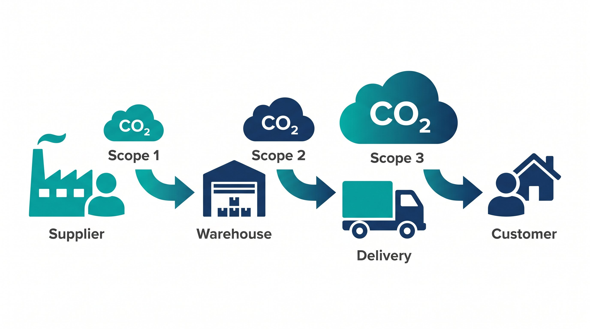

Når man taler om CO2-aftrykket fra et lager, er scope 1 og 2 typisk de første poster, man kigger på: direkte udledninger og indkøbt energi. Men for de fleste lager- og logistikvirksomheder er scope 3 den største post, og den svaereste at måle og håndtere. Scope 3 dækker alle indirekte udledninger i værdikæden, som virksomheden ikke kontrollerer direkte men alligevel er ansvarlig for.
Hvad er scope 1, 2 og 3?
Opdelingen stammer fra GHG Protocol, den mest udbredte internationale standard for klimaregnskaber.
Scope 1 er direkte udledninger fra kilder, virksomheden ejer eller kontrollerer. For et lager: naturgas til opvarmning, dieselforbrug i egne trucks og kølekøling med HFC-gasser.
Scope 2 er indirekte udledninger fra indkøbt el og fjernvarme. Når lageret bruger strøm fra nettet, medfører det udledninger ved elproduktionen. Med Danmarks vedvarende energiandel er emissionsfaktoren for el faldet markant de seneste år.
Scope 3 dækker alt andet: indkøbte varer og tjenester, fragt der udføres af tredjepart, medarbejdertransport, affald fra drift og bortskaffelse af solgte produkter. For et lager og en webshop er dette langt den største kategori.
👉 Vil du kortlægge din scope 3-eksponering? Kontakt SmartPack
Konkrete scope 3-poster for et lager
Udgavende transport (kategori 9): Fragt af færdige ordrer til kunden via fragtpartnere. For en webshop er dette typisk den absolut største scope 3-post. En forsendelse med standardpakkepost udleder typisk 0,3-1,5 kg CO2e afhængigt af vægt, distance og fragttype.
Indkøbte varer (kategori 1): Emballage indkøbt til forsendelse. Produktion af karton, plastik og fyldmateriale udleder CO2. For en webshop med 500 daglige forsendelser kan det være 50-200 kg CO2 om dagen fra emballageproduktion alene.
Indgående transport (kategori 4): Fragt af varer fra leverandører til lageret. Hvis du importerer fra Asien sætter skibsfragt et CO2-aftryk pr. ton-km, selvom du ikke ejer skibet.
Affald fra drift (kategori 5): Affaldsmængder fra lagerdrift, inklusive kasseret emballage, spildvarer og produkter, der ikke kan sælges.
Medarbejdertransport (kategori 7): Pendling til og fra arbejde. For et lager med mange medarbejdere kan dette være en betydelig post, især hvis lageret er placeret uden for byområder med dårlig offentlig transport.
Bortskaffelse af solgte produkter (kategori 12): Hvad sker med produkterne, når kunden er færdig med dem? Dette er et nyere rapporteringskrav og er sværtest at måle, men relevant for produktkategorier med kort levetid.
Metoder til at beregne scope 3
Der er to primære metoder til at beregne scope 3:
Udgiftbaseret metode: Brug krønebelobet på indkøb af fragtydelser, emballage og andre relevante poster ganget med en emissionsfaktor pr. krone. Dette er den nemmeste metode men også den mindst præcise.
Aktivitetsbaseret metode: Brug faktiske mængder, f.eks. antal ton-km fragt, kg emballage indkøbt og antal forsendelser, ganget med specifikke emissionsfaktorer. Denne metode kræver mere data men giver langt mere præcise resultater og er bedre til at identificere, hvad der driver aftrykket.
For fragt bruger de fleste fragtpartnere i dag GLEC Framework-metodologien til at beregne CO2 pr. forsendelse. Mange tilbyder allerede CO2-rapportering som del af API-integrationen. Det er et godt udgangspunkt for den største scope 3-post.
Typiske fejl
Den hyppigste fejl er at rapportere kun scope 1 og 2 og oplyse "CO2-neutral" uden at have beregnet scope 3. Det er baade misvisende og i stigende grad i strid med rapporteringskravene under CSRD.
En anden fejl er dobbeltoptelling: når man rapporterer både indgående og udgående transport, emballageproduktion og afhændelse for ens produkter, kan der være overlap med leverandørers rapportering. GHG Protocol vejleder om, hvordan dobbeltoptelling håndteres.
Endelig: brug ikke scope 3-tal som greenwashing. Scope 3 er værdifuldt fordi det viser, hvor de reelle klimaprioriteter er. Brug dem til at lægge en reduktionsstrategi, ikke til at skabe et misvisende kommunikationselement.
Hvad kan SmartPack gøre?
SmartPack's lagerstyring giver adgang til data om forsendelsesvolumener, emballageforbrug og fragtpartner-opdeling. Den data er grundlaget for at beregne de to største scope 3-poster: udgavende transport og indkøbte varer. Med korrekt dataekstraktionkan virksomheder hurtigt få et scope 3-estimat, der kan bruges i ESG-rapporteringen.